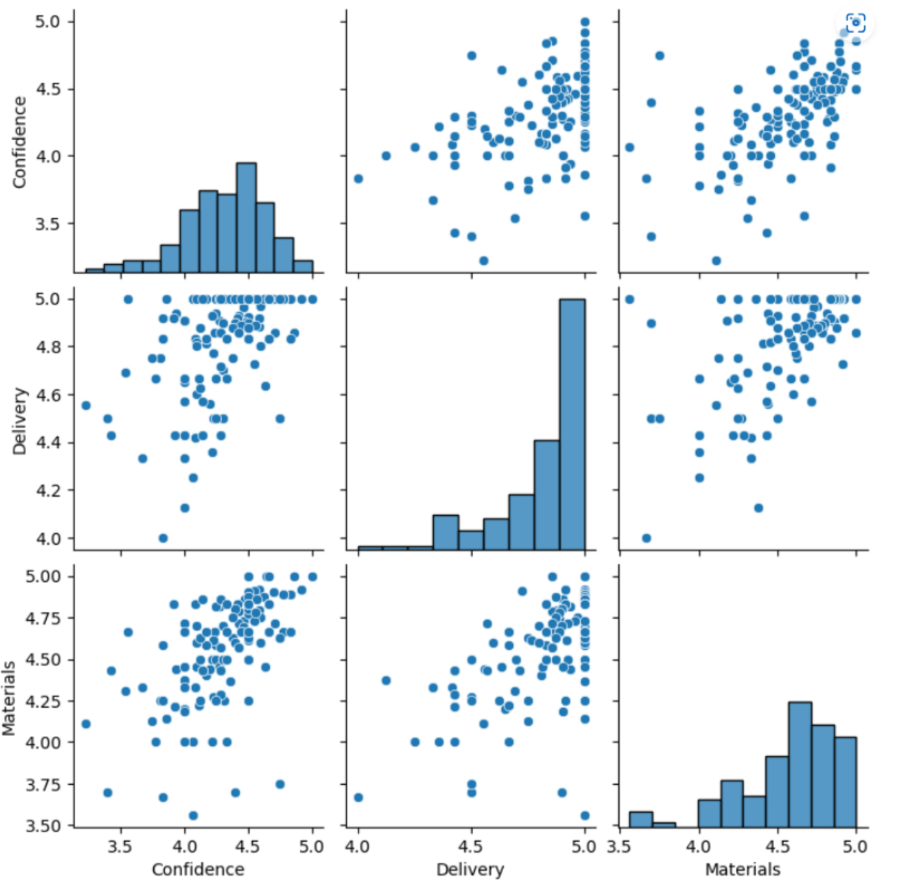

How I went from Excel pivot tables to machine learning - and why the real achievement was changing how my team made decisions.
Date: 2022-23
Skills and technologies: Data Analysis · Data Storytelling · Predictive Analytics · Python · Power Automate · Workday
Most L&D teams measure learning through completion rates and post-course surveys. I wanted to know more.
Over the course of a Level 4 Data Analyst apprenticeship, I designed and delivered projects that gave my team something it had never had before: a systematic, evidence-based view of how learning was performing - and the automated tools to keep it updated.
The technical progression was real, moving from Excel dashboards through to Tableau and Power BI, then onto Python and machine learning. But the bigger shift was cultural. By the end, my team was making decisions differently.

Learning & Development teams generate enormous amounts of data - LMS interactions, user feedback, training records, survey responses. At my organisation, almost none of it was being used. Reports sat in spreadsheets. Feedback was buried in a web interface nobody checked. Decisions about which content to commission, renew, or retire were based on intuition and anecdote.
Project 1: Supplier Usage Dashboard
Who is using our learning content, and when?
Built in Excel with Power Pivot. Revealed that promotional campaigns drove short-term spikes but not sustained engagement - directly informing a commercial contract decision.
01
The brief
L&D leadership wanted to understand who was using an external supplier's course library, and whether a promotional campaign had driven meaningful uptake. A contract renewal decision was pending.
02
The approach
I extracted user and course interaction data from the Learning Management System (LMS) and built a normalised data model in Excel using Power Pivot. I separated the organisational hierarchy into related dimension tables, joined through primary and foreign keys. A DAX expression categorised users into tenure bands, comparing engagement across employees who were 0-3 months, 3-12 months, 1-3 years, and 3+ years in role.
I built the interactive dashboard using Pivot Charts and Slicers, designed around the domain context of L&D stakeholders - with activity categories aggregated into seven audience-relevant groups rather than the fourteen raw categories in the source data.
03
Key findings
Across 280,000 LMS interactions, compulsory content accounted for 69% of all activity. Courses from our external supplier represented less than 2%. In the 28 days following a promotional campaign designed to boost engagement, the five promoted courses saw a 584% uplift on the previous quarter's monthly average - seemingly impressive results.
However, the data showed this spike was not sustained. Subsequent engagement was largely driven by compulsory onboarding programmes, not voluntary uptake. The promotion had generated a short-term spike. Engagement dropped back to baseline within weeks. Subsequently, my organisation did not renew the contract with this supplier.
Project 2: Learning Management System Ratings
What do learners actually think?
Built in Power BI with full end-to-end automation via Power Automate. Turned a feedback system nobody was reading into a weekly, self-updating intelligence tool.
01
The brief
Learner ratings and comments on our Learning Management System were only accessible through a clunky web interface, meaning poor-performing content could go unnoticed for months. I took on the challenge of making that feedback visible and actionable.
02
The approach
I designed a multi-page Power BI dashboard drawing on two data sources: a Ratings and Comments report and a User report. I transformed and joined the datasets using Power Query (M language). Rather than storing data in multiple normalised tables, I merged the queries into a single clean table - removing the only remaining PII field (username/employee ID) in the process.
I researched WCAG 2.0 accessibility guidelines and applied them throughout: avoiding red/green combinations, ensuring colour contrast ratios met standards, and choosing suitable charts to convey data. The dashboard was designed to support weekly stakeholder review cycles.
03
The automation
The full ETL pipeline was automated in three stages:
1. The LMS was configured to email CSV reports every Monday
at 5am.
2. A Power Automate flow saved email
attachments to the cloud, overwriting the existing data
source.
3. Power BI was set to auto-refresh at 7am each
Monday.
No manual intervention required, every week.
Technical highlight: the Adjusted Days calculation
A standard "days since rating" filter would have shown different results depending on which day of the week a stakeholder opened the dashboard. I built a DAX calculated column using the WEEKDAY function to always anchor the 7-day window to the previous Monday - ensuring consistent results regardless of when the dashboard was viewed.
Adjusted Days = DATEDIFF([Rating Date], TODAY() - WEEKDAY(TODAY(),3), DAY)
04
Key findings
5,448 ratings submitted, 760 comments, average rating 4.2/5. The three highest-rated activities were all completed during new joiner onboarding - raising a hypothesis about whether newer employees rate more positively.
Within weeks, the dashboard identified a course with an average score of 1.3/5 after 25+ responses, just days after launch. Verbatim comments identified three specific pain points, which were shared with the supplier. An updated course was promptly released - this proved the catalyst for another portfolio project: Regulatory Remedy.
Project 3: ILT Ratings - Does quality of materials predict learner confidence?
What actually drives learning effectiveness?
Built in Python with Jupyter Notebooks, Pandas, and scikit-learn. Used linear regression and statistical hypothesis testing to find a measurable link between training material quality and learner confidence.
01
The brief
With less than a week's notice, I was asked to "present some data" on instructor-led training (ILT). I used the time to conduct a proper statistical analysis - and to make a strategic argument for better evaluation data.
02
The approach
Coding in Python, I loaded 1,852 learner feedback records into a Pandas DataFrame in Jupyter Notebooks. Each record contained ratings from 0-5 for Confidence (in applying the learning), Delivery (trainer quality), and Materials quality.
After removing Personally Identifiable Information (PII) and cleaning the data, I aggregated records by training group - each group representing one instance of training, delivered by one trainer, to one cohort. Groups with fewer than 5 responses were excluded, leaving 131 aggregated records.
03
The technical bit
Exploratory analysis
A Seaborn
pairplot visually revealed two things immediately: a large
cluster of 5/5 Delivery ratings regardless of other scores,
and an apparent positive correlation between Confidence and
Materials that warranted further investigation.
Normality and correlation testing
I
tested whether Confidence ratings were normally distributed
using D'Agostino's K² test at the 5% significance level. The
test confirmed the data was not normally distributed. This
justified using Spearman's Rank Correlation Coefficient,
which confirmed a strong positive correlation (0.71) between
Materials and Confidence ratings.
Regression
Using scikit-learn's
LinearRegression, I modelled Confidence as a function of
Materials:
Intercept: 1.49 (predicted confidence at Materials = 0)
Coefficient:
0.61 (for every +1 in Materials rating, Confidence increases
by 0.61)
R²: 0.33 (Materials explains ~33% of variance
in Confidence)
RMSE: 0.26 | MAE: 0.21
Model validated using an 80/20 train/test split: Training Score 0.313, Testing Score 0.375 - close enough to confirm the model was not overfitting.
04
The strategic point
I presented the results, which demonstrated a strong link between quality of training materials and learner confidence, while illustrating the potential bias within the Delivery (trainer quality) ratings.
But I presented the model's limitations honestly: subjective end-of-session ratings have limited bearing on real-world performance. The analysis was always of limited value - and I said so.
The greater goal was to demonstrate what better data could tell us, and to secure stakeholder commitment to linking training records with operational performance metrics. That commitment was achieved in the meeting, and led to my final End Point Assessment project - Does Our Training Actually Work?
By the end of these three projects, my L&D team had:
And a proof of concept: that end-to-end data automation was possible within our existing tech stack.
"Dan's really focused on user experience and the way we can now access information so quickly illustrates what a great tool it is… it's already proved useful in identifying problematic content and getting feedback to a supplier in record time."
"This is amazing. This is probably the biggest demonstration of organisational impact we've been able to show."